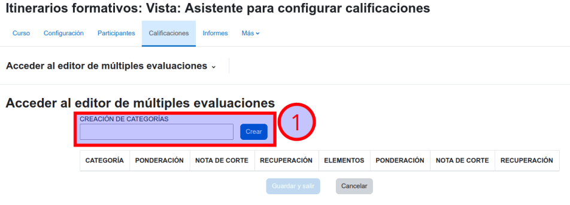
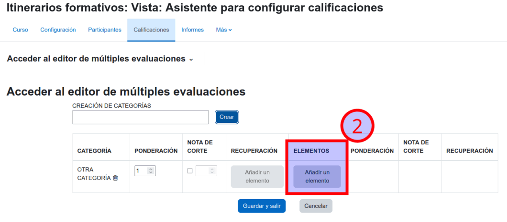
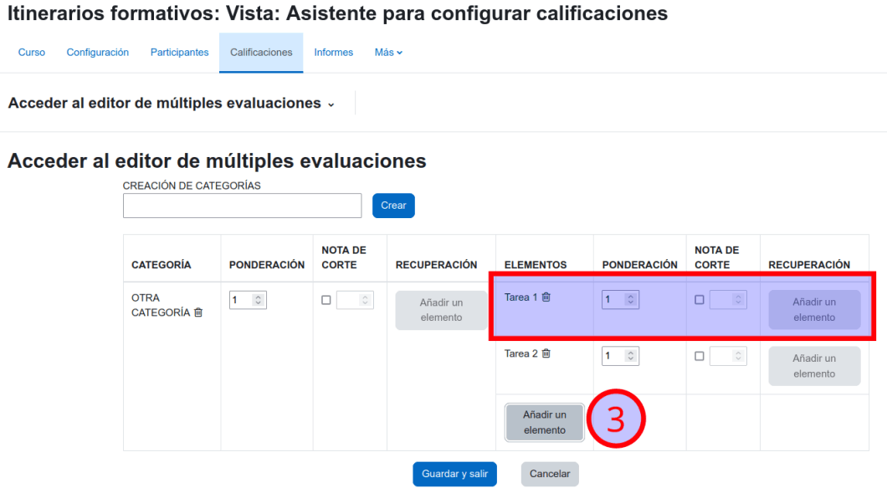
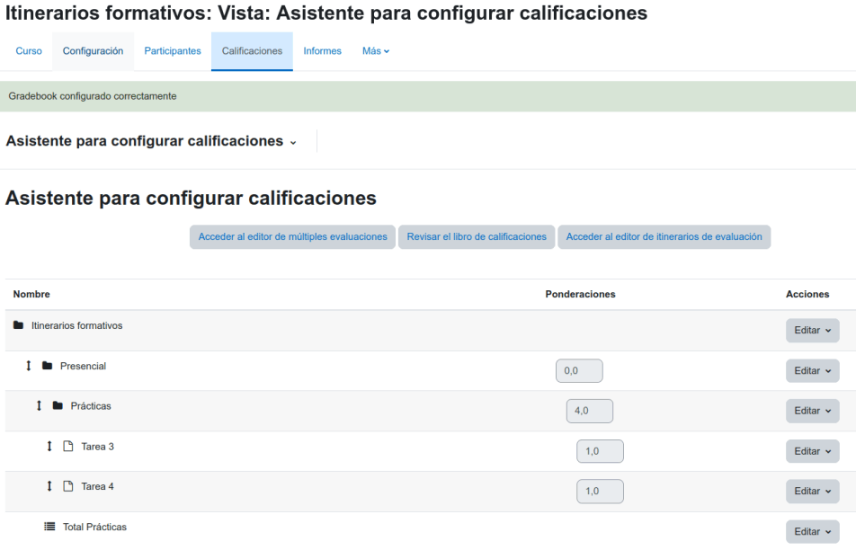

Access to the rating configuration wizard
To access the wizard, you must first access your course, and from there go to the Grades section. Once inside, you will have to open the drop-down menu and click on the Grade Setup Wizard.
To access the wizard, you must first access your course, and from there go to the Grades section. Once inside, you will have to open the drop-down menu and click on the Grade Setup Wizard.

The "Multiple Assessments Editor" facilitates the creation of a Gradebook with weighted elements and a cut-off mark for recovery. To access the editor you must go to the control panel and click on the option "Access to the Multiple Assessments Editor".

The first step is to create the categories you need. To do this, specify a name and click on the Create button.

Once the category has been created, you can:
1. Specify its weighting.
2. If necessary, establish its cut-off mark. When the cut-off mark is established, the recovery element must be specified.
3. Choose the evaluative elements.

Each evaluative element that will be part of the category, its corresponding weighting must also be specified. From here, if necessary, we can apply a cut-off mark for the category and add its recovery element.
Once we have finished, click on the Save and Exit button.

You will see that everything is perfectly configured in your course gradebook.
This project has been carried out with public funds from UNIDIGITAL, Recovery, Transformation and Resilience Plan, NextGenerationEU.